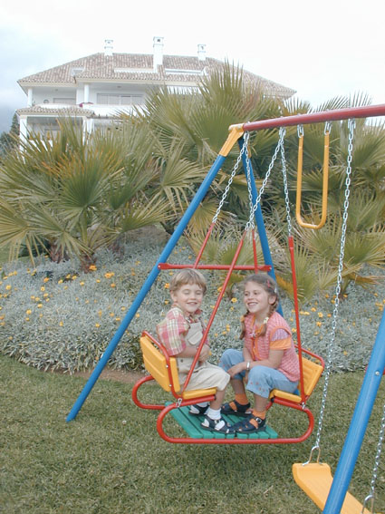

About the artist
Guillermo Silva Sanz de Santamaria
Painter, sculptor, engraver, writer and Yoga teacher, he was born on June 7th, 1921 in Bogota, Colombia.
At forty, he married Maria Galindo. A beautiful mexican girl and now has one son Juan, and a daughter Sandra. While living in Mexico City, he was an engraver teacher at the UNAM and the Ibéro-Americain University. He developed the technique of Intaglio and "Mixed Technique"- etching with watercolour.
Then he studied Yoga in India, where he lived with his family for 10 years. He became a yoga teacher and a competent naturist.
Traveling all over the world Silva was looking for the perfect place to live and work. He finally decided to settle up in Malaga, southern Spain, although his curiosity and restlesness never let him stop. For the last 10 years the Family spent the summers in Norway.
Recently his versatility and creative impulse pushed him to do many sculptures (wood and bronze) and ceramics, as well as new oil paintings.
A happy Grandpa - he has two grandchildren from Juan, named Surya Gabriela (born in 1995) and Gustavo Jyoti (born in 1997)(They have Sanscrit and latin names).
His daughter Sandra has married recently to Jesus (from Spain). They are living in Marbella and are running an art gallery.
Actually Silva divides his life between his Artwork and finishing a book aimed to bring harmony to our lives, recollecting all his wonderful experiences.